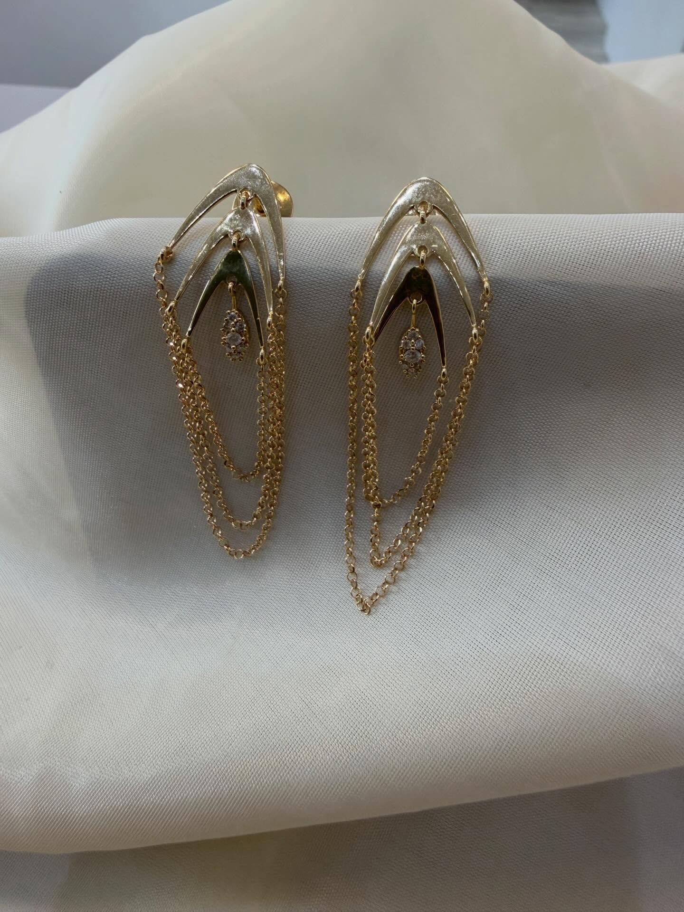
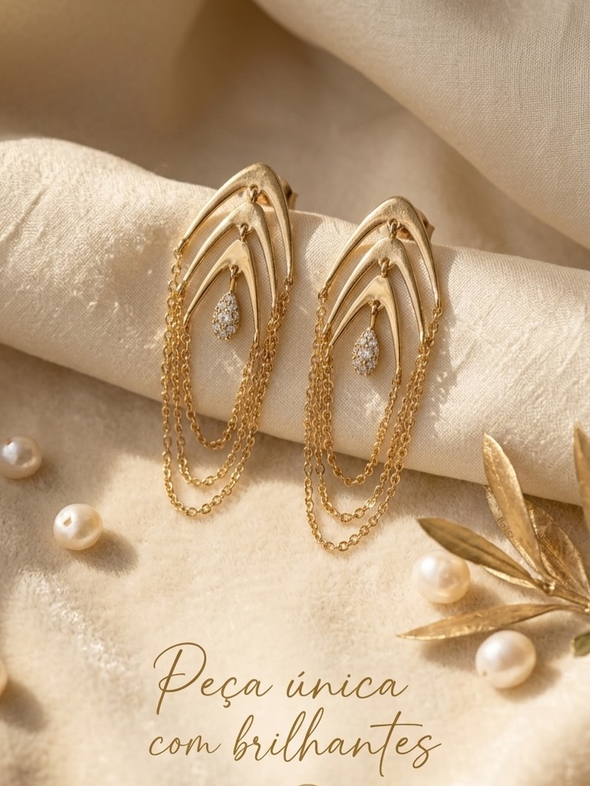
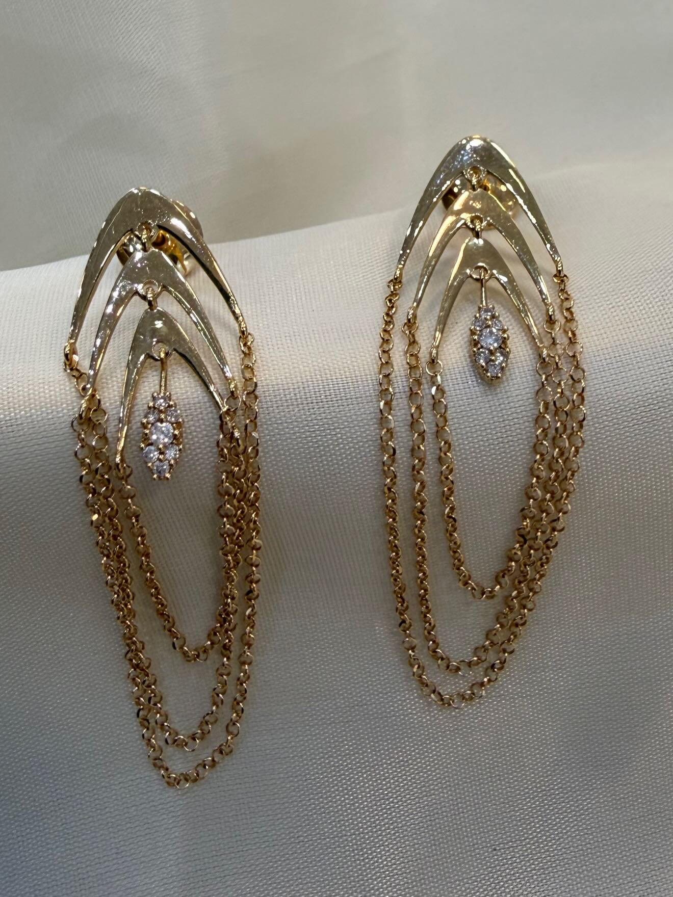
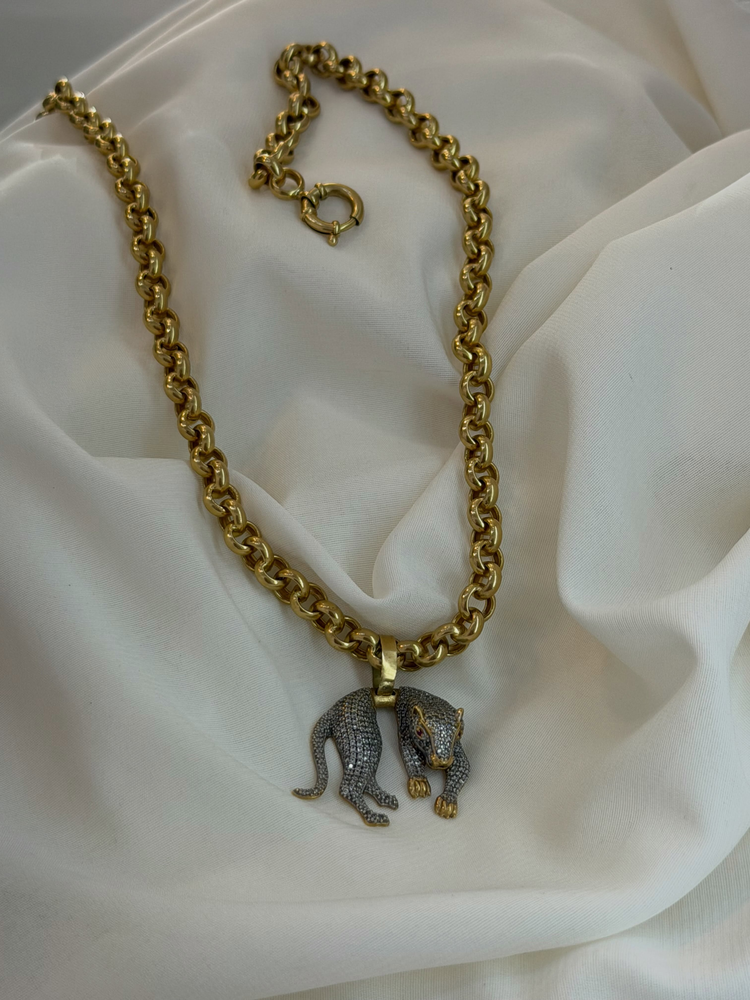

MJ-03 · MJ-03-A01Brincos de correntesPar de brincos alongados, com arcos e correntes em camadas, sobre tecido claro.1440 × 1920 px · Prioridade 1Publicação marcada como conteúdo de IA no Instagram.Ver publicação · foto 2
MJ-03 · MJ-03-A02Brincos de correntesPar de brincos de correntes em composição com pérolas e ornamento dourado; texto sobreposto.768 × 1024 px · Prioridade 3Publicação marcada como conteúdo de IA no Instagram.Ver publicação · foto 3
MJ-03 · MJ-03-A03Brincos de correntesDetalhe do par de brincos de correntes e arcos dourados sobre tecido claro.1320 × 1760 px · Prioridade 2Publicação marcada como conteúdo de IA no Instagram.Ver publicação · foto 4
MJ-04 · MJ-04-A01Colar panteraColar de elos redondos com pantera de superfície cravejada, olhos vermelhos e patas douradas, sobre tecido claro.3024 × 4032 px · Prioridade 1Nova vista sobre tecido claro.Ver publicação · foto 8